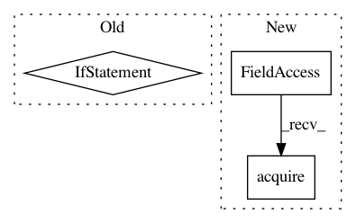

caeb604940b67a36f0c00f37eb703425edc7a371,batchflow/models/torch/base.py,TorchModel,predict,#TorchModel#,996
Before Change
predictions = self.model(inputs)
if targets is not None:
if train_mode in self.train_steps.keys():
step = self.train_steps[train_mode]
else:
raise ValueError("`train_mode` must reference exact `train_step`.")
loss_fn = step["loss"]
loss = sum([loss(predictions, targets) for loss in loss_fn]) / len(loss_fn)
output_container["loss" + "_"*bool(len(train_mode)) + train_mode] = loss
output_container["predictions"] = predictions
After Change
self.model.eval()
if use_lock:
self.model_lock.acquire()
with torch.no_grad():
output_container = {}
predictions = self.model(inputs)
In pattern: SUPERPATTERN
Frequency: 4
Non-data size: 3
Instances
Project Name: analysiscenter/batchflow
Commit Name: caeb604940b67a36f0c00f37eb703425edc7a371
Time: 2020-11-02
Author: Tsimfer.SA@gazprom-neft.ru
File Name: batchflow/models/torch/base.py
Class Name: TorchModel
Method Name: predict
Project Name: tensorflow/transform
Commit Name: 96e4af6e86e93da021c29a4273dcdfaeab8fdfcf
Time: 2017-08-07
Author: tf-transform-dev@google.com
File Name: tensorflow_transform/beam/impl.py
Class Name: _RunMetaGraphDoFn
Method Name: process
Project Name: ray-project/ray
Commit Name: f31ee84bfdc6dc2325c8890412a965e509074d0a
Time: 2020-09-05
Author: wlx65005@gmail.com
File Name: streaming/python/runtime/task.py
Class Name: InputStreamTask
Method Name: run
Project Name: ray-project/ray
Commit Name: 1b1466748f1db72835a594d73d502e9787e080a9
Time: 2020-09-04
Author: wlx65005@gmail.com
File Name: streaming/python/runtime/task.py
Class Name: InputStreamTask
Method Name: run